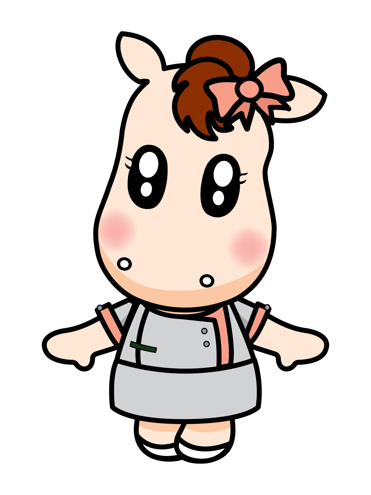
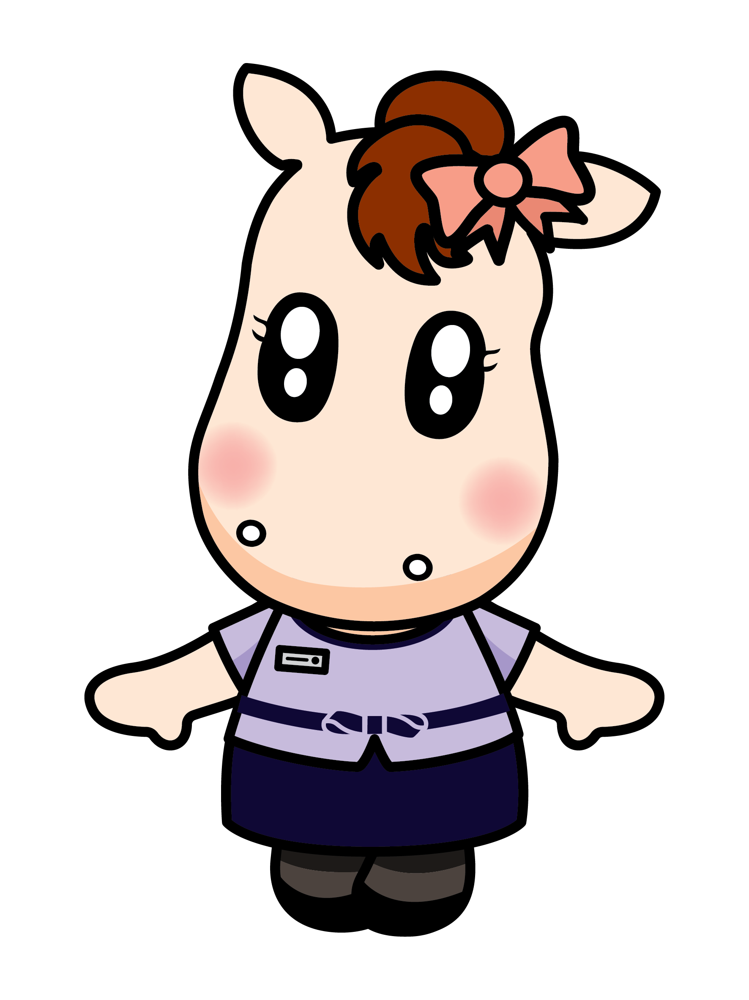

天災期間院所營運機制與 QA
💚 以同仁安全為優先・兼顧病患照護 💚
一、 天災期間營運原則
天然災害期間，公司將秉持「善待同仁、善待患者」的核心價值，在確保安全的前提下，兼顧醫療服務不中斷，並依實際天候狀況做最適切的營運安排。
二、 院所營運決策機制
政府宣布停班停課，屬天然災害停止上班措施，並不代表各地實際風雨狀況一致。因此，馬光不採一律於前一晚宣布全面休診，而是由各院主管於當日上午 7:00，依院所所在地實際天候及交通狀況綜合評估，決定當日營運方式：
☀️ 正常看診
風雨未達影響程度，維持正常醫療服務。
🌀 啟動颱風班
依預規劃名單、鄰近同仁優先彈性出勤。
🛑 休診
風雨已明顯影響通勤安全，啟動休診機制。
三、 建立此機制的原因（初衷與考量）
過去，公司曾全面比照政府停班停課宣布休診，但多次遇到實際風雨不大，甚至無風無雨、天氣晴朗的情況。
當患者依原訂療程希望回診時，卻因院所休診而無法就醫，不僅影響後續治療安排，也曾接獲患者反映，周邊商家、百貨公司及其他診所皆正常營業，唯獨馬光休診，造成就醫上的不便。
身為醫療院所，我們希望在安全無虞的前提下，盡可能維持患者必要的醫療服務。
當患者依原訂療程希望回診時，卻因院所休診而無法就醫，不僅影響後續治療安排，也曾接獲患者反映，周邊商家、百貨公司及其他診所皆正常營業，唯獨馬光休診，造成就醫上的不便。
身為醫療院所，我們希望在安全無虞的前提下，盡可能維持患者必要的醫療服務。
四、 同仁安全照顧措施
同仁安全始終是公司最優先考量。若當日風雨已影響通勤安全，院所將視情況休診；若天候仍適合安全出勤，則依既有颱風班制度運作。
- 平時預先規劃颱風班名單，以鄰近院所同仁優先支援。
- 優先考量同仁通勤距離及安全性安排出勤.
- 提供天災出勤交通補助，協助降低同仁通勤負擔。
針對天災出勤、遲到或薪資等權益，馬妞幫大家整理了最常見的問答，點擊問題即可展開查閱喔！